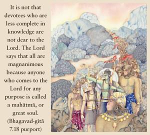

All these devotees are undoubtedly magnanimous souls, but he who is situated in knowledge of Me I consider to be just like My own self. Being engaged in My transcendental service, he is sure to attain Me, the highest and most perfect goal.

It is not that devotees who are less complete in knowledge are not dear to the Lord. The Lord says that all are magnanimous because anyone who comes to the Lord for any purpose is called a mahātmā, or great soul. The devotees who want some benefit out of devotional service are accepted by the Lord because there is an exchange of affection. Out of affection they ask the Lord for some material benefit, and when they get it they become so satisfied that they also advance in devotional service. But the devotee in full knowledge is considered to be very dear to the Lord because his only purpose is to serve the Supreme Lord with love and devotion. Such a devotee cannot live a second without contacting or serving the Supreme Lord. Similarly, the Supreme Lord is very fond of His devotee and cannot be separated from him.
In the Śrīmad-Bhāgavatam (9.4.68), the Lord says:
sādhavo hṛdayaṁ mahyaṁ
sādhūnāṁ hṛdayaṁ tv aham
mad-anyat te na jānanti
nāhaṁ tebhyo manāg api
“The devotees are always in My heart, and I am always in the hearts of the devotees. The devotee does not know anything beyond Me, and I also cannot forget the devotee. There is a very intimate relationship between Me and the pure devotees. Pure devotees in full knowledge are never out of spiritual touch, and therefore they are very much dear to Me.”